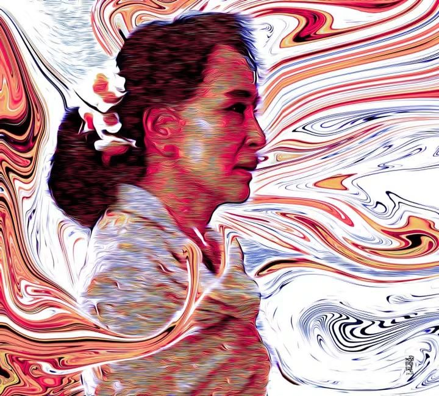

Article and Inspiration
သံမဏိနှင်းဆီ

[ကမ္ဘာ့ အစောဆုံး အချိန်ဇုန် ကျရောက်တဲ့ ကီရီဘတ်စ်(Kiribati) ကျွန်းနိုင်ငံဆီ ဇွန် ၁၉ စတင်တဲ့ အချိန်မှာ ဦးဦးဖျားဖျား ဒေါ်အောင်ဆန်းစုကြည်ရဲ့ ၈၀နှစ်ပြည့် မွေးနေ့ကို မြန်မာကဗျာဆရာ ၈၁ ဦးက တစ်ယောက် တစ်ပါဒစီ စုပေါင်း ရေးဖွဲ့တဲ့ "စု ၈၀ သို့ ကဗျာပါဒ ၈၀ +၁" ကဗျာလေးကို ဝမ်းသာစွာ တင်ပေးလိုက်ရပါသည်။
စု ၈၀ သို့
ကဗျာပါဒ ၈၀+၁
၂။ လေးဆယ်ကျော်မှ ဘဝစခဲ့သူ တစ်ယောက် ရှစ်ဆယ်ကျော်ရောက်လည်း ဘဝလှပါစေ။
၃။ နှစ်ပေါင်း၈၀ အံ့မခန်း ကြမ်းပေမဲ့ ‘ကျွန်မတို့ပြည်သူ’ ကျစ်ကျစ်ပါဆုပ်မြဲ လောကဓံဆိုတာ သူ့ရွေးချယ်မှု
၄။ သူမက နိုင်ငံကို လက်နဲ့ရေးတယ် ခွေးထက်မိုက်တဲ့ သူတွေကတော့ ခြေနဲ့ဖျက်ရုံမက သေးပါ ပန်းကြလေရဲ့
၅။ မိုးရဲ့အစ ကြည်လင်တဲ့လေပြေထဲ အမေတဲ့၊ နာမည် မလိုဖူးလေ
၆။ အမတ နှင်းဆီ
၇။ နှင်းဆီဆိုပြီး ကျွန်မကို ခုတ်လှဲကြတာ၊ ရနံ့က လေထဲမှာဆိုတာ သူတို့ မသိကြဘူး
၈။ ထာဝရ လင်းလက်နေတဲ့ ကြယ် ရနံ့မပြယ်တဲ့ ပန်း မခမ်းနိုင်တဲ့ စမ်း လန်းဆန်းမွှေးပျံ့ ကျက်သရေဖြာ
၉။ သံကန့်လန့်ကာနဲ့ ပိတ်လှောင်ထားလည်း နှလုံးသားဟာ တောက်ပစွာ လွတ်မြောက်နေမြဲ
၁၀။ စာအုပ်ကြားထဲညှပ်ပြီး ထောင်ချခံလိုက်ရတဲ့အတွက် နှင်းဆီပွင့်ဖတ်လေးဟာ နောင်နှစ်ပေါင်းများစွာ ကြာတဲ့အထိ မဆွေးမြေ့တော့ဘူး
၁၁။ ဂျွန်လရဲ့လှသောတိမ်များပေါ် အရဲဆုံး အမွှေးဆုံး နှင်းဆီများဖြင့် အမေ့အမည် ရေးထိုး၊ ၈၀ မှသည် နှစ်တစ်ရာတည်ပါစေ ရေးထိုး၊ ငြိမ်းချမ်းလမ်းသစ်ပေါ် ဒေါက်ဖိနပ်လျှောက်သံဖြင့် ပန်းတို့ပွင့်ပါစေ ရေးထိုး
၁၂။ ဓားစာခံအဖြစ် တစ်ဘဝစာ ရင်းထည့်ပေးခဲ့တဲ့ ဒဏ်ရာဒဏ်ကြေးကို ပြန်တောင်းဖို့ ပြင်ဆင်ဖြည့်ဆည်းပေးကြပါအုံးလား
၁၃။ သူမရဲ့ နိုးထခြင်းနဲ့ အိပ်စက်ခြင်းကြားက စက္ကန့် မိနစ်တွေဟာ တရားမျှတမှုနဲ့ ငြိမ်းချမ်းရေးအတွက်ပဲ ဖြစ်စေခဲ့တယ်
၁၄။ ခူးလေပွင့်လေဆိုတဲ့ သဘောတရားနဲ့ ဒီပန်းဟာ ပြည်သူ့နှလုံးသားတွေထဲ ဝင်ဝင်ပွင့်တယ်။
၁၅။ ရဲရင့်ခြင်း ဉာဏ်ပညာတွေ မြစ်ဖျားခံရာ အားနာစွာရက်စွဲများ
၁၆။ ကဗျာဆိုတာ ကျွန်တော်တို့ရဲ့ ရုန်းကန်သံပါပဲ
၁၇။ ဘယ်တော့မှ၊ ဘယ်တော့မှ၊ ဘယ်တော့မှ၊
၁၈။ ကမ္ဘာမြေကို မျက်နှာတစ်ဖက်တည်း တစ်သမတ် ပြသနေတဲ့ လမင်းလို သူမကိုကြည့်လိုက်တိုင်း မြင်ရပါသော မပြောင်းလဲသည့် ကျက်သရေတင့်ရွှန်းခြင်း
၁၉။ ကမ္ဘာ့ဦးခေါင်းထက်က ပန်းတစ်ပွင့်ရဲ့ရနံ့ဟာ အမှောင်နံရံကို ထိုးဖောက်ပြီး တက်ကြွလန်းဆန်းစေလျက်ပါ
၂၀။ စိတ်မနှံ့သူတွေကြားထဲ ဂျိုကာရယ်သလို ငါ့ရယ်သံတွေ ရပ်မရ
၂၁။ အမေ သို့မဟုတ် နှစ်ရှစ်ဆယ် ရေတံခွန်တစ်စင်း ရဲရင့်မှုနဲ့ အမှန်တရားတို့ အဆက်မပြတ် စီးဆင်းလျက်
၂၂။ စီးဆင်းသံဟာ ခွပ်ဒေါင်းတို့ရဲ့တွန်ကျူးသံအဖြစ်နဲ့ တဟုန်းဟုန်း ထစ်ချုန်းနေတယ် …
၂၃။ ဦးမညွှတ်တဲ့ ရှစ်ဆယ်ပြည့် သံမဏိနှင်းဆီကို ငါ ဦးညွှတ်
၂၄။ မည်သို့ဖြစ်စေ ကိုယ့်အတွက် ကဗျာတစ်ကြောင်းမှာတော့ အမေကျန်းမာပါစေကြောင်း
၂၅။ တိမ်ဖုံးလို့လမသာလဲ အေးမြမှုကို ခိုးလို့မရဘူး အမေရယ်
၂၆။ အမေ့စိတ်က ဘယ်တော့မှ မပျက်တဲ့ စက်မှန်း သိပါတယ်
၂၇။ ငါသိငါတတ်မလို သင်ယူချင်စိတ်ရှိသူ လိုရဲ့ အမေ့စကား နှလုံးသားမှာ
၂၈။ ငါနဲ့ ငါ့နိုင်ငံဟာ သူမစိတ်ဓာတ်လို၊ စုဆီက ဆုလို ရင့်ကျက်တည်ငြိမ်လာရင် ကောင်းမယ်။
၂၉။ နတ်ဖုရားရဲ့ လေညှင်းကို တင်ဆောင်လာတဲ့ ပန်းတစ်ပွင့် အနာအကျင်မရှိ လင်းပါစေ။
၃၀။ ကျွန်မအိမ်ထောင်စုစာရင်းမှာ ကျွန်မ တစ်ယောက််ထဲပဲ၊ ပြည်ထောင်စုစာရင်းမှာတော့ ကျွန်မက အများကြီး
၃၁။ ဂျွန်လနှင်းဆီ၊ တော်လှန်သူတို့ ပွင့်ဖတ် ရဲရဲနီ
၃၂။ ၈၀ ဆိုပေမယ့် ပစ်ပယ်လို့မရနိုင်သူ
၃၃။ သူမ စုစည်းနေခဲ့တာ နှစ်ပေါင်း ၈၀၊ ကျွန်တော်တို့ကတော့ ကွဲဲပြားနေတုန်းပဲ၊ သူမလို လူတွေကိုတော့ ကမ္ဘာကြီးက စုထားလေရဲ့။
၃၄။ ရန်သူက အမှုန့်ကြိတ်ချေလိုပြီး ချစ်သူတွေ ဦးထိပ် ပန်ဆင်ချင်တဲ့ တစ်ပွင့်တည်းသော …
၃၅။ အမေ ဆိုသည်မှာ ငါတို့ရဲ့ လွတ်လပ်ရေးပါ
၃၆။ သူ(မ) ကို သံခိပ်ပြုလိုက်တဲ့အခါ ဉာဏ်ပညာနဲ့ မေတ္တာဖြစ်လာတယ်၊ ဝိတ္ထာရပြုလိုက်တဲ့အခါ မေတ္တာနဲ့ ဉာဏ်ပညာ ဖြစ်လာတယ်
၃၇။ အဘိုးကြီးစန်တီယာဂို ရှိခဲ့သလို အဘွားကြီးစန်တီယာဂိုလည်း ရှိတယ်
၃၈။ ကျွန်တော့် လက်ဖဝါးလေးနှစ်ဖက်ဟာ အချင်းချင်း ဆုပ်နယ်ရင်း ဆုတောင်းရ
၃၉။ လူထုမေတ္တာ စုဝေစီဖြာ ကျန်းမာပါစေ
၄၀။ တစ်ပွင့်တည်းလည်း ပွင့်ရဲရတယ် လေညင်းပဲလာလာ မုန်တိုင်းပဲတိုက်တိုက် ဘယ်ခါမှ ဦးမညွှတ်လိုက်တဲ့ သူ
၄၁။ ဘာကို ဖော်ပြရမှာလဲ
၄၂။ ချစ်သူ တစ်ဖက် မုန်းသူတစ်ဖက်နဲ့ မုန်တိုင်းကြားမှာ ရွက်လှေဟာ ကိုယ်ကျိုးမငဲ့ဘဲ ရွက်လွှင့်နေလေရဲ့
၄၃။ ခေတ်သစ် သားတရားစီရင်ခန်းမှာ သားသတ်သမား လှောင်အိမ်ကို ရွေးခဲ့တဲ့ နှင်းဆီ ရှစ်ဆယ်အထိ စွေးစွေးနီဆဲ
၄၄။ သူမ ပြန်လာမယ် သူမ သန်းပေါင်းများစွာအနေနဲ့ ပြန်လာခဲ့မယ် ဆိုတာမျိုးထက် ပိုပြီးတော့ သူမ ပြန်လာမယ်ပေါ့
၄၅။ ၈၀ မကသော နှလုံးသားများက နူးညံ့လှပသော ပန်း ၈၀ ကို ပန်ကြတယ်။ Happy Birthday အမေစု
၄၆။ ညဉ့်နက်လက်ခုပ်ထဲက တလဲ့လဲ့ ပိုးစုန်းကြူး
၄၇။ လုံးဝယုံကြည် အဝေးနှင်းဆီနိုင်ငံတော်
၄၈။ ပြည်သူ့ဆုတောင်းတွေပြည့်ပြီး တိုင်းပြည်အနာဂတ်ရဲ့အလင်းရောင်အောက် အမေလျှောက်လာမယ့် ခြေလှမ်းများကို ရင်ဖွင့်ကြိုနေလျက်
၄၉။ မလွတ်မြောက်ခြင်းထဲ<ကပဲ လွတ်မြောက်မှုတေးသံ ဆောင်ကြဥ်းပေးမယ့် ဇွန်၁၉ နှစ်၈၀
၅၀။ ဘေး ၈၀ ၊ ရန် ၈၀ ၊ ဒဏ် ၈၀၊ အလွမ်း ၈၀ ၊ ပန်း ၈၀ ၊ လမ်း ၈၀၊ ဒိုက် ၈၀၊ ကီလို ၈၀၊ဆုတောင်း ၈၀၊ ငှက် ၈၀၊ ငါး ၈၀၊ ဆီမီး ၈၀၊ အလယ်ရိုးမ လေနဲ့ဆို ရှစ်ဆယ်ဟာ ချစ်တယ်လို့ အသံထွက်မှာ
၅၁။ ကမ္ဘာဝင့်အောင် လှပနုပျို
၅၂။ ငါတို့ ရင်မှာ အသံမဲ့တေးသွား သံပြိုင်သီကျူးရင်း အမေ့ ၈၀ ဆီ စိတ်ပါလက်ပါ တညီတည်း နှင်ကြ
၅၃။ နှစ်များအလဟဿ အဓိပ္ပါယ်ရှိစွာ
၅၄။ လူသားဆန်မှုကင်းတဲ့မီးတောင်ပြာ အမှောင်ထုအောက်ကနေ အလင်းဓာတ်ဟာ စကားဝါပန်းတွေလို ပွင့်လာတယ်။
၅၅။ ဉာဏ်ပညာ ရိုးသားဖြောင့်မတ်ခြင်းနဲ့ စိတ်ကောင်းစေတနာ အနှစ်ရှစ်ဆယ်
၅၆။ ဖက်ဆစ်မီးဟုန်းဟုန်းထဲကနေ အပြန်ပြန်နိုးထ ပြည်သူကိုလမ်းပြနေဆဲ ဖီးနစ် သက်တော် ၈၀ ဖြစ်ခဲ့ပေါ့။
၅၇။ လျှောက်နေတဲ့ လျှောက်ရမယ့် ဒီလမ်းမကကြီးဟာ ဖိနှိပ်ချိုးချေ ထုခွဲ အကြိတ်အနင်းခံထားရတဲ့ ကျောက်သားထု အစိုင်အခဲလို ဘဝတွေ နှလုံးသားတွေ အနမတဂ္ဂနဲ့ ...
၅၈။ လွတ်လပ်တိမ်တွေ ကောင်းကင်တခွင်ဖြန့်ကြက် ဖြည့်စေတယ်၊ မြေလွှာတပြင် သစ္စာပန်း အပွင့်ရှစ်ဆယ် ပြည့်ပေါ့
၅၉။ လတ် လောင် သိခွင့်မပေးတဲ့ အကျဥ်းတစ်နေရာမှာ တစ်သမတ် တောက်လောင်လျက်၊ မိစ္ဆာတို့ အညစ်အကြေးနဲ့ပွတ်တိုက်လည်း ဂုဏ်သတင်း ဝင်းပြောင်လျက်
၆၀။ အဲဒီပုံရိပ်ဟာ ဘယ်အမိန့်နဲ့ ဖျောက်ဖျောက် မပျောက်တဲ့၊ ဘယ်အာဏာနဲ့ ဖယ်ဖယ် မပျက်ပြယ်တဲ့ သန်းပေါင်းများစွာရဲ့ မြင်လွှာမှာ မပျက်မယွင်း ထင်းနေတဲ့ ပုံရိပ်
၆၁။ အပြိုင်စကြဝဠာ တကယ်ရှိခဲ့ရင်ပေါ့လေ၊ ပြန်ရုတ်သိမ်းစရာ နိုဗယ်ဆုတွေ ဘာတွေအစား လွတ်လပ်ပျော်ရွှင်ဖွယ် အမှတ်တရ အချိန်အခါ ဓာတ်ပုံတွေ အပြည့်နဲ့ အိမ်တစ်အိမ်မှာ၊ သူမရဲ့သားနှစ်ယောက်ကလွဲ ဘယ်သူမှ သူ့ကို အမေလို့ မခေါ်တဲ့ လောကမှာ၊ နှင်းဆီရဲ့အဓိပ္ပာယ်ကို တစ်မျိုးတမည် ဖွင့်ဆိုနေမယ့် ဥရောပနိုင်ငံတစ်ခုမှာ အဲဒီမှာ သူမရဲ့ အသက် ၈၀ပြည့် မွေးနေ့ကို ကျင်းပနေလို့ ရပေမဲ့ သူမကတော့ ကျနော်တို့ စကြဝဠာကိုပဲ ရွေးခဲ့တယ်။
၆၂။ နှစ်ပေါင်း ၈၀ထိ မုန်တိုင်းရဲ့ ကမ်းကုန် ကြမ်းကြုတ်မှုတွေထဲ တောက်လောင်ပေးနေဆဲ ဒီမီးအိမ်ရဲ့မီးဇာ မငြိမ်းဖို့ ငါတို့ အသက်တွေ ထပ်ထည့်လောင်မြိုက်ရပါစေ၊ နှစ်ပေါင်းများစွာထိ မယိုင်လဲသော အလင်းကို ဆောင်ယူပေးနိုင်ပါစေ ငါတို့ မီးအိမ်
၆၃။ စုထားတဲ့ မျှော်လင့်ချက် အမြန်ပြည့်မယ့်နေ့တွေ မဝေးတော့ပါဘူး
၆၄။ ရေအလျင် မစီးဆင်းနိုင်တော့တဲ့ ရေတံခွန်ဟာ ချောက်ကမ်းပါးတစ်ခုနဲ့ သိပ်မထူးခြားတော့သလိုပေါ့ အတိတ်က နာမည်ကပဲ အမာရွတ်တစ်ခုလို ထင်ကျန်ရစ်ခဲ့မှာ
၆၅။ နေခြည်နုသစ်မှာ ပြန်ပြန်ဖူးပွင့်လာမယ့် ပန်း ရာသီတိုင်းမှာ ပျောင်းညွတ် တည်ခိုင်စွာ နာကျင်နောက်ကျိဒီရေထဲ ထိုးထွက်ရှင်သန်နေဆဲ
၆၆။ မုန်တိုင်း ပန်းလှိုင်းနဲ့ ကြယ်ရိုင်းတွေကို ဖြတ်ခဲ့ရ
၆၇။ လှောင်ချိုင့်ထဲက အသက်ရှူသံ မိုးမြေအနှံ့လွင့်ပျံ
၆၈။ "ရာစုထက်ဝက်" … ဆယ်စုသုံးစု ထပ်ပေါင်း … “ကောင်းသော သာ၍ ကောင်းသော အကောင်းဆုံးသော" စိတ်ဓာတ် သမိုင်းမှတ်တမ်း ဒို့ကို ချစ်သော ဒို့က ချစ်သော လမ်း
၆၉။ နေရာတိုင်းမှာ တိုက်ပွဲရှိတယ် တိုက်ပွဲတိုင်းမှာ နေရာရှိတယ် ရှိတဲ့တိုက်ပွဲထဲ နှင်းဆီဟာ သံမဏိပွင့်ချပ်တွေနဲ့ စွေးစွေးနီ ရယ်မောနေတယ်။
၇၀။ ကတိပေးပါတယ်။ ပကတိ မြေပြင်နဲ့ ဟပ် အသက်ပါ ပုံအပ် စုခြေရာနောက် ထက်ကြပ်မကွာ
၇၁။ Voice of Hope, Melody of Hope, Song of Hope, Music of Hope, Aung San Suu Kyi of Hope
၇၂။ အင်းလျား ကမ်းခြေ ဆန်းကြယ်သည့် ဥဩတေး … “နွေဦး နွေဦး နွေဦး” … တဲ့
၇၃။ သင်းခွေချပ်လေးရဲ့လည်ချောင်းသံလို ဟောဒီဇွန်လမှာ တိမ်တွေဟာ တစ်ခုပြီး တစ်ခု တီထွင်နေရင်းနဲ့ပဲ
၇၄။ မချိုးဖျက်နိုင်တဲ့ ဝိဉာဉ်ရဲ့ နွေဦး သူ့အသက်ထဲမှာ အလင်းတန်း တစ်ကြောင်း ကျန်နေသေးရဲ့
၇၅။ အလွမ်းဇာတ်ကလည်း တစ်စခန်း မရပ်နိုင်လွန်းလှပေါ့
၇၆။ မငြိမ်းချမ်းတော့ ငြိမ်းချမ်းချင်တာပါပဲ၊ မအေးချမ်းတော့ အေးချမ်းချင်တာပါပဲ
၇၇။ လွတ်မြောက်စေလိုခြင်းကို ပြဖို့ ပန်းတွေပျိုးရသတဲ့။ အရောင် ရနံ့ အမျိုးအစား နှစ် ၁၀၀ တိုင် ကြားရစေ။
၇၈။ တော်လှန်ရေးကို ရှာမတွေ့ မချင်း လူဟာ မိမိကိုယ် ရှာမတွေ့ဘူး ထို အမျိုးသမီးကြီးမှာ လေးစားစရာတွေ အများကြီး
၇၉။ အနှောင်အဖွဲ့မဲ့… ကိုယ်ကျိုးမဲ့ … စွန့်လွှတ်ခြင်းများကို သူနှောင်ဖွဲ့ လွတ်မကျဘဲ အရာရာလွှတ်ချခဲ့ ဒီလိုနဲ့ သူဟာ အနှစ် ၈၀
၈၀။ အဆုံးစွန်သွေ့ခြောက် သွေးအဓမ္မနယ်ကောင်းကင်မှာ သီးသန့်လင်းလက်ရာ ဂုဏ်ပြုခံကြယ်
၈၁။ နိုင်ငံတော်ရဲ့အလင်း နိုင်ငံတော်ရဲ့ နှင်းဆီ၊ ရောင်နီတွေနဲ့ အတူ ... သူ ... ပြန်လာနိုင်ပါစေ